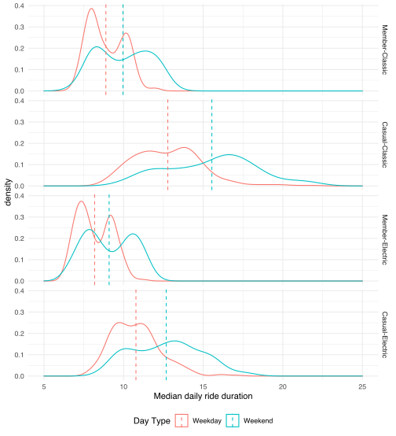
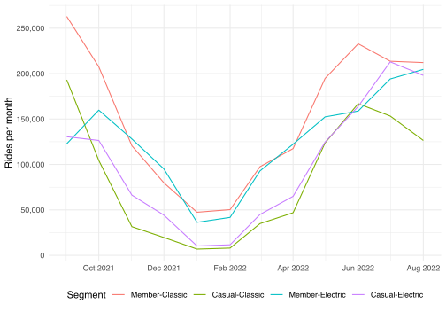
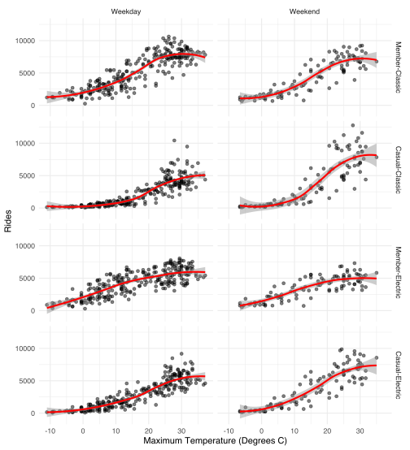

Cyclistic Customer Analysis
Google Data Analytics Certificate Capstone
Background
In 2016 Cyclistic launched a bike-sharing sharing offering which has grown to a fleet of 6000 geotracked bicycles and network of more than 1000 stations across Chicago.
Analysis by Cyclistic’s finance team has determined that riders who purchase annual memberships are more profitable than casual riders.
Head of marketing, Lily Moreno, has set a goal of designing marketing strategies aimed at converting casual riders to members. The intial step is to better understand how casual users and members differ.
This information will provide a basis for members of the marketing analytics team to investigate why casual riders might purchase a membership, and how digital media could influence marketing strategy.
The executive team, which is detail oriented, will decide whether the proposed marketing strategies are approved.
Defining the business task
The scope of this analysis is limited to the first step, and investigates the question:
How do annual members and casual riders use Cyclistic bikes differently?
Unpacking this question highlights a number of areas that may provide useful insights.
What influence does have on user behaviour?
Members and casual riders access the Cyclistic network under different pricing structures. How much influence does this have on behaviour such as ride duration?
When do different user cohorts ride?
Which days, and times are popular for the different cohorts? What identifiable differences or commonality in behaviours can be seen?
Does weather influence rider behaviour?
Are the types and number of rides related to day-to-day variations in weather or broader seasonal patterns? Do members and casual riders differ in this regard?
Where do different user cohorts ride?
Riders commuting to work are likely to use docking stations in business districts during the week. Recreational riders may prefer parks and areas along the shoreline or cafe precincts.
Is there a relationship between the type of bike and where users ride?
Analysis
Ride duration
Code
basic <- bike_rides %>%
group_by(
user_bike,
month
) %>%
summarise(
rides = n(),
duration = median(as.numeric(ride_time, units = "minutes"))
)Code
basic %>%
ggplot(
aes(
month, duration,
group = user_bike,
colour = user_bike
)
) +
geom_line() +
scale_x_date(
breaks = scales::breaks_width("2 months"),
labels = scales::label_date("%b %Y", tz = "America/Chicago")
) +
ylim(0, 30.5) +
labs(
x = NULL,
y = "Median ride duration in minutes",
colour = "Segment"
) +
theme_minimal() +
theme(legend.position = "bottom")
Figure 1 shows the median ride time for each month for the five combinations of bicycle and user type. Member rides are consistently shorter than casual rides.
Casual-Docked consistently has the longest median ride duration and appears to identify rides taken on a day pass. For this analysis I have assumed that Casual-Docked rides are primarily visitor traffic and are unlikely to take up membership. These rides excluded from further analysis.
Code
day_rides <- bike_rides %>%
filter(bike_type != "Docked") %>%
mutate(weekend = if_else(
dayw %in% c("Sat", "Sun"),
"Weekend",
"Weekday"
)) %>%
group_by(
user_bike,
yday = floor_date(started_at, "day")
) %>%
summarise(
weekend,
n = n(),
duration_mins = as.numeric(median(ride_time)) / 60
) %>%
distinct()
m <- day_rides %>%
group_by(
user_bike,
weekend
) %>%
summarise(
mean_duration = mean(duration_mins)
)Code
day_rides %>%
ggplot(
aes(
duration_mins,
colour = weekend,
group = weekend,
alpha = 0.7
)
) +
geom_density() +
geom_vline(
data = m,
aes(
xintercept = mean_duration,
colour = weekend,
alpha = 0.8
),
linetype = 2
) +
facet_grid(
rows = vars(user_bike)
) +
guides(
alpha = "none"
) +
xlim(5, 25) +
labs(
x = "Median daily ride duration",
colour = "Day Type"
) +
theme_minimal() +
theme(
legend.key = element_blank(),
legend.position = "bottom"
)
The distribution of ride durations in Figure 2 shows a clear bimodal distribution for member ride duration taken on weekdays. This reflects shorter median duration for rides taken between November and April illustrated by Figure 1, compared with the May to October period.
A weaker bimodal distribution is evident in weekend member rides and casual rides.
Both member and casual groups electric bikes have a shorter ride duration than classic bikes.
Cyclistic pricing changed on 10 May 2022. The changes reduced the casual unlock fee from $3.30 to $1.00 and removed 30 minutes included time for classic bikes and e-bike trips. There is an indication that the median duration for Casual-Classic and Casual-Electric trips has declined from May 2022 onwards.
Seasonal influence
Member and Casual riding patterns appear to be sensitive to seasonal influences.
Code
basic %>%
filter(
user_bike != "Casual-Docked"
) %>%
ggplot(aes(
month, rides,
group = user_bike,
colour = user_bike
)) +
geom_line() +
scale_y_continuous(
breaks = scales::breaks_width(50000),
labels = scales::label_comma()
) +
scale_x_date(
breaks = scales::breaks_width("2 months"),
labels = scales::label_date("%b %Y", tz = "America/Chicago")
) +
labs(
x = NULL,
y = "Rides per month",
colour = "Segment"
) +
theme_minimal() +
theme(legend.position = "bottom")
The number of rides taken by all cohorts is lowest in January and February, which coincides with the winter season. Peak ride months cover May, June, July, and September with a slight decline during August.
Code
br_season <- bike_rides %>%
mutate(
season = as.factor(case_when(
month(started_at) %in% c(9, 10, 11) ~ "Autumn",
month(started_at) %in% c(12, 1, 2) ~ "Winter",
month(started_at) %in% c(3, 4, 5) ~ "Spring",
month(started_at) %in% c(6, 7, 8) ~ "Summer"
)),
season = fct_relevel(season, c("Autumn", "Winter", "Spring", "Summer"))
) %>%
filter(
user_bike != "Casual-Docked"
)
br_season %>%
group_by(
user_bike,
season,
dayw,
) %>%
summarise(
avg_rides = n() / n_distinct(date(started_at)),
.groups = "drop"
) %>%
ggplot(
aes(
dayw,
avg_rides,
group = user_bike,
colour = user_bike
)
) +
geom_line() +
labs(
x = "Day of the week",
y = "Average daily rides",
colour = "Segment"
) +
facet_grid(rows = vars(season)) +
theme_minimal() +
theme(legend.position = "bottom")One of the notable features of winter is the consistent number of daily rides taken by members despite the cold. Members take consistently more weekday rides in all seasons. Peak days for rides on causal plans are weekends - Saturday and Sunday - with a larger of rides taken on Fridays during the summer months.
Code
weather <- read_csv(
"data/raw/chicago_climate_data_noaa.csv",
show_col_types = FALSE,
name_repair = janitor::make_clean_names
) %>%
filter(station == "USW00094846")
rides_temp <- day_rides %>%
inner_join(
select(
.data = weather,
date,
tavg,
tmin,
tmax,
awnd,
prcp
),
by = c("yday" = "date")
)
rides_temp %>%
ggplot(aes(tmax, n, group = user_bike)) +
geom_point(alpha = 0.5) +
geom_smooth(color = "red", alpha = 0.5) +
facet_grid(
rows = vars(user_bike),
cols = vars(weekend)
) +
theme_minimal() +
labs(
x = "Maximum Temperature (Degrees C)",
y = "Rides"
)
The influence of maximum daily temperatures on number of rides across weekdays and weekends shown in Figure 5.
Casual classic bike ride numbers remain low when the maximum temperature is 10°C or below. Casual e-bike rides start increasing when the maximum temperature reaches 0°C. Casual ride numbers appear to decline once the maximum temperature reaches 30 degrees.
Weekday member rides remain at a consistent level right though winter with similar numbers of electric and classic rides taken. Members show a slight preference for E-bikes when the maximum temperature is below 5°C. Weekend member ride numbers are around 25% lower.
Peak ride numbers occur on days when the maximum temperature is between 25 and 35°C. E-bike ride numbers peak at higher maximum temperatures than classic bikes.
This suggests that E-bikes encourage casual users to ride when maximum temperatures are in the range of 0°C to +15°C and during hot weather.
Overall, members appear to be less influenced by temperature and seasonal variation than casuals. Member rides have a consistent base of around 2000 rides per weekday through winter. Ride numbers begin to steadily increase once the daily maximum temperature reaches 0°C.
Casual riders who are using E-bikes in cold and hot temperatures on weekdays appear to have similar behaviours to members in that they will ride in a broad range of weather conditions. Riders in this segment who ride several times a month may be candidates for membership.
Time of day
Code
br_season %>%
mutate(
weekend = if_else(
dayw %in% c("Sat", "Sun"),
"Weekend",
"Weekday"
)
) %>%
group_by(
user_bike,
weekend,
season,
hour
) %>%
summarise(
avg_rides = n() / n_distinct(date(started_at)),
.groups = "drop"
) %>%
ggplot(
aes(
hour,
avg_rides,
group = user_bike,
colour = user_bike
)
) +
geom_line() +
labs(
x = "Time of day",
y = "Average ride starts per hour",
colour = "Segment"
) +
facet_grid(
rows = vars(season),
cols = vars(weekend)
) +
theme_minimal() +
theme(legend.position = "bottom")
Member and casual rides show distinct differences between weekday ride times.
Member ride starts show two well defined peaks aligning with morning and afternoon commutes. Casual rides steadily increase across the day peaking at around 5:30pm. All cohorts display a small peak around midday.
Weekend riding patterns show a steady increase with ride starts levelling off around 10.00am then remaining fairly constant until late afternoon. Ride starts then taper off into the evening with a small peak around 8.30pm.
Location
Code
station_season_time <- br_season %>%
mutate(
weekend = if_else(
dayw %in% c("Sat", "Sun"),
"Weekend",
"Weekday"
)
) %>%
filter(
!is.na(end_station_name),
hour == 10
) %>%
group_by(
longitude_end,
latitude_end,
weekend,
user_bike
) %>%
summarise(nm = n()) %>%
group_by(weekend, user_bike) %>%
slice_max(nm, n = 50)
# ggmap(chi_map) +
# geom_point(
# data = station_season_time,
# aes(
# longitude_end,
# latitude_end,
# colour = user_bike),
# alpha = 0.4,
# size = .75) +
# facet_grid(
# rows = vars(weekend),
# cols = vars(user_bike)) +
# theme_minimal() +
# theme(legend.position = "bottom")